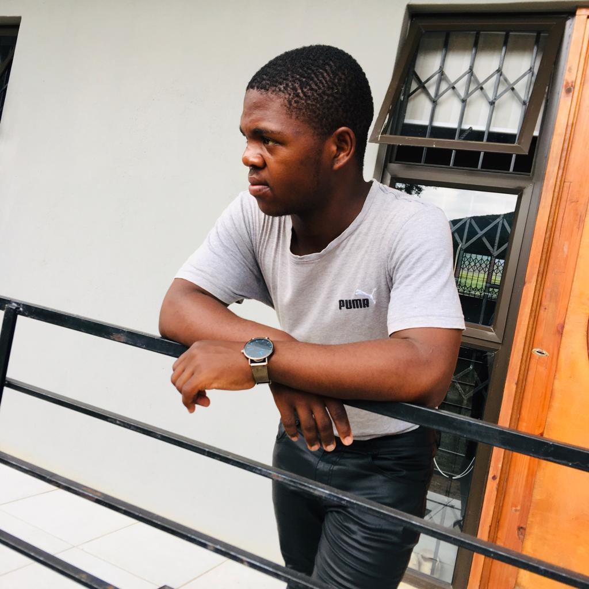

Hello! My name is Thokoza Madondo. I am an IT student with a passion for technology, coding, and building innovative projects. My goal is to become a skilled full-stack developer and contribute to modern software solutions.